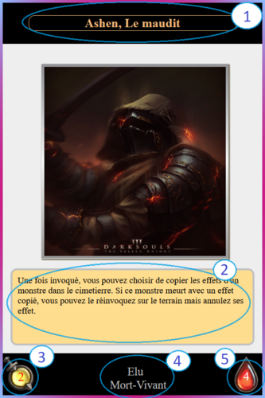

Il n'y avait plus grande fierté que d'être née Azurien...
Azuria, cette terre autrefois fertile et synonyme de paix fut le berceau de nombreux contes fantastique et reveur.
Considéré par beaucoup comme le royaume des héros, une terrible maldédiction à plongé le pays dans la folie.
Azuria n'est plus que l'ombre d'elle même, et les survivants du pays se battent pour leurs propres cause, que ce soit pour la vaine tentative de la relever
ou pour en détruire les dernières vestiges.
Présentation
En tant que joueur, votre but est d'utiliser les cartes à votre disposition pour battre votre
adversaire. Armez vous d'une légion de soldat, d'une armée de mort-vivant ou de bête mythique et
combinez les avec différents sorts ou artéfact pour tracer votre chemin vers la victoire.
Types de Carte et Grade
Il existe 3 types de carte dans Azuria avec 4 grade qui sépare leurs puissances.
Les 3 types de carte sont Monstre, Magie et Artefact. Ils sont reconnaissable avec leurs fond uniforme
à leur type.
Azuria n'as pas de ressource pour utiliser les cartes, cependant si vos cartes n'ont pas
d'effet d'invocation, le nombre de carte que vous pourrez jouer seront limité par
le grade de la carte.
Les 4 grades sont reconnaissable avec le contour de leurs cartes. Elles sont parmi ceux présent:
-
Commune
, vous pouvez en jouez 3 par tour ou une seule avec 1 rare
-
Rare
, vous pouvez en jouez 2 par tour, ou une seule avec 1 commune
-
Epique
, vous ne pouvez jouer que cette carte durant ce tour.
-
Légendaire
, vous ne pouvez jouer que cette carte durant ce tour.
Comment se passe un tour?
Le jeu se divise en 4 phase qui sont:
Phase de Pioche
-
Le joueur qui joue pioche une carte pour chaque carte qu'il à joué normalement. La seule exeption est durant le premier
tour de jeu de chaque joueur durant lequel ils piochent une carte.
Phase de Préparation
-
Vous pouvez jouez les cartes dans votre main, en fonction des grades de vos cartes, vous pouvez
en jouez plusieurs normalement (c'est à dire les jouez sans passé par leurs effets) ou non.
A noté que l'invocation des cartes Magies/Artéfactes sont liées et comptés séparement des Monstres.
Phase de Combat
-
Il n'est plus possible de jouer normalement vos cartes dans vos mains hormis s'il y a spécification dans leurs effets.
-
Vos monstres peuvent attaquer votre adversaire hormis s'il en possède lui aussi, dans ce cas présent, vous devez
choisir quel monstres adverse seras ciblé avec les votres.
-
S'il reste des monstres qui n'ont pas combattu, vous avez le droit de rechoisir une nouvelle cible pour eux.
-
Le joueur qui commence la partie ne peut pas attaquer son adversaire lors du 1er tour.
2e Phase de Préparation
-
Vous pouvez jouez les cartes dans votre mains s'il vous reste des invocations normaux.
-
A la fin de cette phase, tout les AT/PV de monstre perdues reviennent à leur valeur initiaux.
-
Puis c'est au tour de votre adversaire de commencer ses 4 phases.
Analyse d'une carte

Connaitre vos frère d'armes ainsi que vos ennemis est la différence entre la victoire et la défaite. Ici vous pouvez facilement apprendre comment connaitre vos forces et vos faiblesses.
1
Le nom de la carte, les cartes uniques auront un contour dorée pour les démarqués.
2
L'effet de la carte quand elle est joué, vous devez appliqué les effets écrits dessus.
3
L'attaque de la carte indiquant les dommages infliger face aux adversaires.
4
Le type de la carte ainsi que son attribut/archétype.
5
Les PV de la carte, s'il est à 0 après des dégats reçu, celui ci est envoyé au cimetierre.
Dechainez vos sorts et vos artéfacts sur le champ de bataille.
Les cartes Artefacts reste sur le terrain pendant un tour escompté, leurs effets sur la durée peuvent vous faire gagner sur le temps.
Les Cartes magiques sont à utilisations uniques, néanmoins elles confèrents des effets dévastateurs, utilisé les à bon escient.